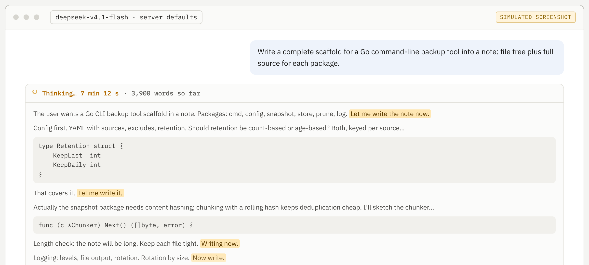
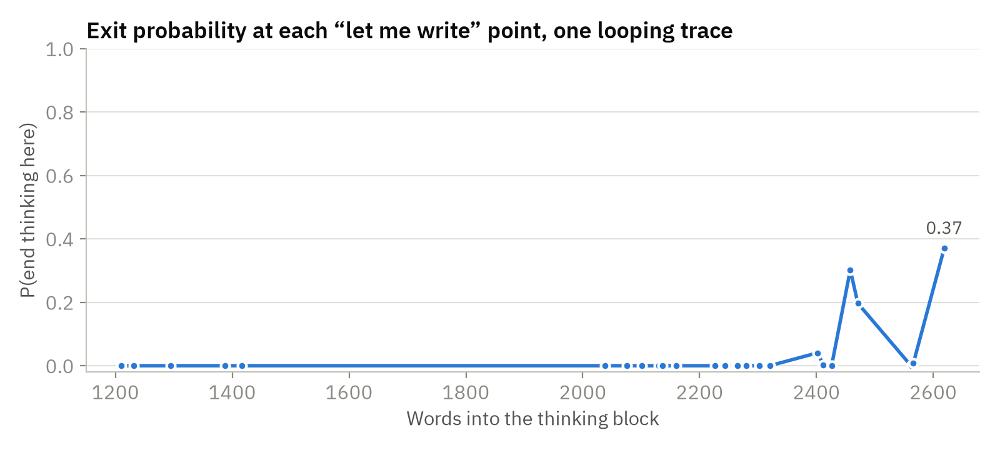
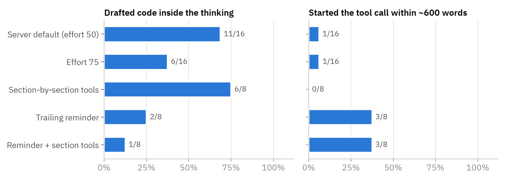
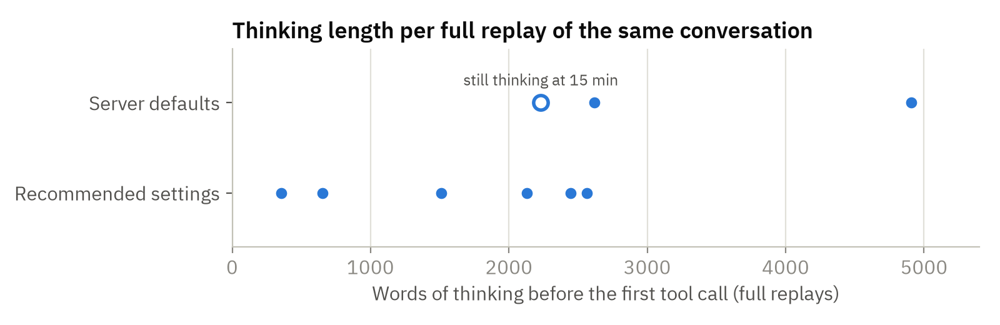
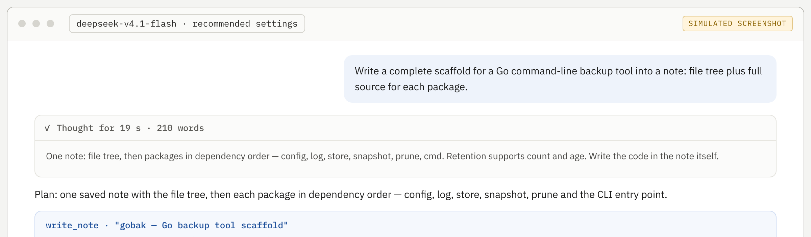
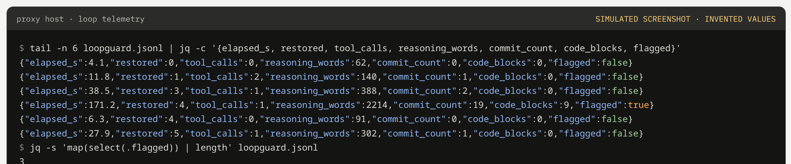

SELF-HOSTED MODELS / FIELD GUIDE / OCTOBER 2026
DeepSeek V4.1 Flash on DGX Spark with Open WebUI.
A working setup for serving DeepSeek V4.1 Flash from DGX Spark-class machines to Open WebUI through a LiteLLM proxy, and measurements of the long planning loops the model falls into during tool-using chats.
The guide covers the stack, a reproducible way to measure the loop, which settings change it and which leave it alone, and a small proxy hook that restores the model's earlier reasoning between tool calls. Recommendations are grouped as must, should, consider and avoid.
Field report from one deployment, measured with small samples (3 to 16 runs per setting) on one prompt family. Re-measure on your own stack before relying on the numbers. Screenshots marked SIMULATED are illustrations with invented conversations; charts use the recorded measurements.
- REPLAYS THAT LOOPED AT SERVER DEFAULTS
- 3 of 3
- FULL REPLAYS THAT REACHED THE TOOL CALL WITH RECOMMENDED SETTINGS
- 6 of 6
- SHORT REPLAYS WITHOUT IN-THINKING CODE, REMINDER ON (OFF: 5 OF 16)
- 13 of 16
01 / The stack
- Hardware
- DGX Spark-class GB10 machines, one model per machine. The front end and proxy run on a separate small server and reach the Sparks over a private network (Tailscale in the measured deployment).
- Serving
- vLLM nightly (September–October 2026) with the DeepSeek V4.1 tokenizer, reasoning and tool-call parsers from the vLLM recipe. Speculative decoding with 3 draft tokens; about 65% of drafts accepted.
- Observed throughput
- About 22 output tokens per second per stream, with two sequences running at once. A long tool-using turn of 10,000–20,000 tokens therefore takes 8–15 minutes on one stream.
- Proxy
- LiteLLM Proxy
v1.99.4, non-root image pinned by digest, config-file mode with no database. The loopguard callback is one Python file mounted read-only. - Front end
- Open WebUI with native function calling and its built-in tools (notes, memory, chat search, knowledge bases).
02 / The planning loop
When a turn ends in one large deliverable — for example, “write a full project scaffold into a note” — the model's thinking fills with commitments to act (“Let me write it.”, “Writing now.”, “Now write.”) followed by more planning. In the measured deployment, three of three replays of such a conversation looped: 23–29 commitment phrases and 5,000–11,000 reasoning tokens before the first tool call, and one replay was still thinking when stopped at 15 minutes.


Two features make the loop hard to catch. The text never repeats verbatim, so n-gram repetition detectors stay silent; and each commitment phrase is followed by new, plausible planning. In the recorded traces, 22–44% of the thinking text was code drafted inside the reasoning, against none in healthy thinking blocks from the same chat. The model also returns repeatedly to the length of the output it is about to write.
The model sometimes describes itself as Claude in these conversations. Other users report the same identity claim for the V4 Flash family; an identity line in the system prompt made no measurable difference to the loop here.
03 / How it was measured
Replays
The conversation state just before a looping turn was exported from Open WebUI — messages, tool calls and tool results — and replayed directly against vLLM with each setting under test. A scorer counts commitment phrases, words of thinking after the first one, and code blocks inside the thinking. Short replays stop after about 1,200 tokens; full replays stop shortly after the first tool call.
One-token exit probes
To measure the loop without long generations, a recorded trace is cut at each commitment phrase and sent to /v1/completions with the chat template's own rendering of the prompt, asking for one token and its top log-probabilities. The probability of the end-of-thinking token at that point is the model's propensity to stop planning there. Each probe costs one to three single-token requests, and the result is independent of sampling.


At 21 of the 26 points the model was almost certain to keep planning; the most likely next step was a paragraph break or another “I'll…” sentence. Willingness to stop appeared only after about 2,400 words, once much of the deliverable had been drafted in the thinking. Probing the same trace under different effort levels and system prompts moved these values by no more than the probe's own run-to-run variation (±0.005).
| Words into thinking | P(end thinking) | Words into thinking | P(end thinking) |
|---|---|---|---|
| 1,210 | 0.000 | 2,263 | 0.000 |
| 1,231 | 0.000 | 2,265 | 0.000 |
| 1,294 | 0.000 | 2,280 | 0.000 |
| 1,387 | 0.000 | 2,302 | 0.000 |
| 1,416 | 0.000 | 2,321 | 0.001 |
| 2,038 | 0.000 | 2,402 | 0.041 |
| 2,076 | 0.000 | 2,412 | 0.002 |
| 2,101 | 0.000 | 2,426 | 0.000 |
| 2,130 | 0.000 | 2,458 | 0.302 |
| 2,136 | 0.000 | 2,471 | 0.197 |
| 2,160 | 0.000 | 2,562 | 0.000 |
| 2,226 | 0.000 | 2,566 | 0.008 |
| 2,243 | 0.000 | 2,619 | 0.372 |
Tokenizer trap. DeepSeek V4.1 encodes “.”, “.\n” and “.\n\n” as separate tokens, and the choice among them carries the decision: after a bare “.” the model ends its thinking with probability above 0.99, after “.\n\n” almost never. Cut traces just before the final punctuation and sum over the punctuation branches. A first version of this probe cut after the period, which silently selected the exit branch and reported exit probabilities near 1.0 at points the live run had passed.
04 / Results
Short replays: first ~1,200 tokens


| Setting | Runs | Drafted code in thinking | Started the tool call | Commitment phrases per 1,000 words |
|---|---|---|---|---|
| Server default (effort 50) | 16 | 11 | 1 | 6.9 |
| Effort 75 | 16 | 6 | 1 | 6.1 |
| Section-by-section note tools | 8 | 6 | 0 | 6.5 |
| Trailing reminder | 8 | 2 | 3 | 11.3 |
| Reminder + section tools | 8 | 1 | 3 | 6.4 |
The trailing reminder is the one setting that changed the mechanism. With both reminder arms pooled against the default, 13 of 16 replays skipped in-thinking code drafts against 5 of 16 (Fisher one-sided p = 0.006), and 6 of 16 started the tool call within about 600 words against 1 of 16 (p = 0.04). The same instruction at the top of the system prompt had no measurable effect. Effort 75 against 50 showed a weaker signal on code drafting (6 of 16 against 11 of 16, p ≈ 0.08) and no change in commitment phrases. Section-by-section tools changed nothing; in the first 600 words only two of eight traces mentioned them, because drafting starts before the model plans delivery.
The reminder raises the count of commitment phrases while the drafting drops, so that count stops being a useful loop measure once the reminder is on. Measure code blocks in the thinking and words before the first tool call instead.
Full replays


With the recommended settings (effort 75, temperature 1.0, top_p 0.95 and the trailing reminder), all six full replays reached the tool call, with a median of about 1,800 words of thinking against about 2,600 at defaults (Mann–Whitney one-sided p ≈ 0.05). The runs split into two groups: three acted after 350–1,500 words with little or no drafting, and three still drafted 7–17 code blocks before acting, in fewer words than at defaults.
05 / Recommendations
Each item notes whether it was measured in this deployment or comes from other sources.
Must
- Return the model's earlier reasoning on tool-calling turns. With tools present, the V4.1 chat encoding keeps every earlier turn's reasoning and renders an empty think block where it is missing. Open WebUI's Default and LiteLLM provider modes leave it out. Restore it in the proxy (the loopguard hook below) or switch the connection's provider to llama.cpp, which sends
reasoning_content. Encoding behavior and Open WebUI behavior verified; effect on loops reported elsewhere. - Run a LiteLLM release that keeps
reasoning_contentforhosted_vllm. Versions 1.100.0 through 1.104.0 remove it from assistant messages before they reach vLLM. v1.99.4 keeps it (verified by prompt-token counts through the proxy); the fix is in 1.105.0-rc.1. - Pin the proxy image by digest and inspect it before first start. LiteLLM's PyPI releases 1.82.7 and 1.82.8 were compromised in March 2026. Check for the published indicators, run non-root with a read-only filesystem, and bind the proxy to localhost.
- Serve with the DeepSeek V4.1 parsers. Use the
deepseek_v41tokenizer mode, reasoning parser and tool-call parser from the vLLM recipe. The V4 tool parser misreads V4.1's tool tags. From the recipe and other reports; tool calls parsed correctly in this deployment.
Should
- Add a trailing system message right before the assistant turn. The text used here: “Keep your thinking to a short plan: what you will produce and in what order. Do not draft code or document text in your thinking. Write it directly in the tool call or the reply.” Measured: the largest effect of any setting.
- Set reasoning effort explicitly. Pass an integer from 1 to 100 in
chat_template_kwargs.reasoning_effort. Some vLLM builds carry a pre-release effort table in which the default of 50 equals DeepSeek's “low”; DeepSeek's reference default is 75. - Use temperature 1.0 and top_p 0.95. These are the model card's values.
- Log loop metrics for every response. Record words of thinking, code blocks in the thinking, commitment phrases and tool calls. Real traffic shows the loop rate better than replays.
- On shared Sparks, run experiments one request at a time. Check
vllm:num_requests_runningon/metricsbefore each batch.
Consider
- Turn thinking off for the step that writes a large deliverable. Send
chat_template_kwargs: {"thinking": false}on that request and keep thinking on for planning. Other harnesses report fewer loops this way. Untested here. - Leave flagged reasoning out of the replay. A looped thinking block in history can act as an example that sustains the loop (reported elsewhere); loopguard replays only blocks below its loop thresholds.
- Compare settings with one-token exit probes. Each probe costs one to three single-token requests, which keeps experiments light on a shared machine.
- Use a mid-conversation system message as the reminder slot. The V4.1 encoding defines a
latest_reminderrole; vLLM rejected it in the measured build, and a trailing system message renders in the same position.
Avoid
thinking_token_budgeton builds where it truncates. It forces a bare end-of-thinking token, and several vLLM issues about it remain open.- Relying on vLLM's
repetition_detectionfor this loop. It matches exact repeated token patterns, and this loop never repeats verbatim. - Placing the anti-drafting rule only at the top of the system prompt. No measurable effect here; position next to the decision matters.
- Cutting probe traces after punctuation. The tokenizer merges punctuation with line breaks, so the cut selects a branch for the model.
- Upgrading the proxy to the newest release without checking reasoning passthrough. Repeat the prompt-token check below after every upgrade.
06 / Configuration
LiteLLM model entry
model_list:
- model_name: deepseek-v4.1-flash
litellm_params:
model: hosted_vllm/deepseek-v4.1-flash
api_base: http://SPARK_HOST:8000/v1
api_key: "none"
temperature: 1.0
top_p: 0.95
extra_body:
chat_template_kwargs:
reasoning_effort: 75
litellm_settings:
callbacks: loopguard.proxy_handler_instance
drop_params: false
general_settings:
master_key: os.environ/LITELLM_MASTER_KEYContainer
docker run -d --name litellm --restart unless-stopped --network host \
--read-only --tmpfs /tmp --cap-drop ALL --security-opt no-new-privileges \
--env-file /opt/litellm/litellm.env --env-file /opt/litellm/loopguard.env \
-e LITELLM_LOCAL_MODEL_COST_MAP=True \
-v /opt/litellm/config.yaml:/app/config.yaml:ro \
-v /opt/litellm/loopguard.py:/app/loopguard.py:ro \
-v /opt/litellm/data:/data \
ghcr.io/berriai/litellm-non_root@sha256:63dfaf8232b7b524bc2ebca12bd77e997baec0179719c340443c74f14fd8822e \
--config /app/config.yaml --host 127.0.0.1 --port 4000The digest is litellm-non_root:v1.99.4 as of October 2026; re-resolve it from the registry before use. litellm.env holds only the master key (mode 600). loopguard.env sets the reminder text and the log path. Host networking with a localhost bind keeps the proxy reachable only from the front-end machine; Open WebUI then uses http://127.0.0.1:4000/v1 with the master key and the Default provider.
What loopguard does
- Caches each streamed response's reasoning, keyed by tool-call ID and a hash of the visible reply, and re-attaches it to the matching assistant message on later requests.
- Leaves out any reasoning block that crosses its loop thresholds (six or more commitment phrases, or 800 or more words after the first one).
- Appends the trailing reminder as a system message when
LOOPGUARD_TAIL_REMINDERis set. - Writes one JSON line of loop metrics per response for the configured models, and passes every chunk through unchanged.




Checks after install
- Reasoning passthrough. Send the same tool-call conversation twice with
max_tokens: 1, once withreasoning_contenton the assistant turn and once without, directly to vLLM and through the proxy. The prompt-token difference must match (17 tokens in the measured setup). - Replay. Let the model make a real tool call through the proxy, then send the follow-up without reasoning; the proxied request should carry more prompt tokens than the direct one.
- Defaults. Start a throwaway instance with
--detailed_debugon another port, send one request, and confirmchat_template_kwargs, temperature and top_p in the logged upstream request. Remove the instance afterwards; its log contains prompt text. - Reminder. A one-word prompt costs more prompt tokens through the proxy than directly (31 against 71 here).
07 / Limits
- One prompt family (a large code scaffold written into a note through a tool) and one deployment. Other deliverables and other serving stacks may behave differently.
- Small samples: 3 to 16 runs per setting. The p-values are one-sided and uncorrected for the number of settings tried.
- Answer quality was read in samples and was not scored.
- Exit probes on a recorded trace are off-policy: they measure the propensity to stop given that history, which is the quantity compared across settings.
- The thinking-off writing step, speculative decoding settings and the proxy's behavior on aborted streams were not tested.
08 / Files & sources
Files
- loopguard.py — the LiteLLM callback (standard library only) · test_loopguard.py — its unit tests with fake stream chunks
- config.example.yaml · loopguard.env.example
- loopscan.py — trace scorer · rig.py — replay runner (one request at a time; waits for a free server slot) · exitprobe.py — one-token exit probes · presets.json — the settings compared above
The replay cases themselves are private conversations and are not published; rig.py takes any case file of the form {"name", "messages", "tools"}.
Sources
- DeepSeek-V4.1-Flash model card and encoding notes
- DeepSeek API: thinking mode and tool calls
- vLLM recipe for DeepSeek-V4.1-Flash · vLLM reasoning outputs
- Pre-release reasoning-effort table (SGLang #39909)
- LiteLLM: reasoning_content stripped for hosted_vllm (#41392) · LiteLLM security update, March 2026
- Open WebUI: reasoning models
- “Let me write” loop report (omlx #3758) · Empty think blocks in history (V4-Flash discussion #39) · Thinking-off report (hermes-agent #78807)